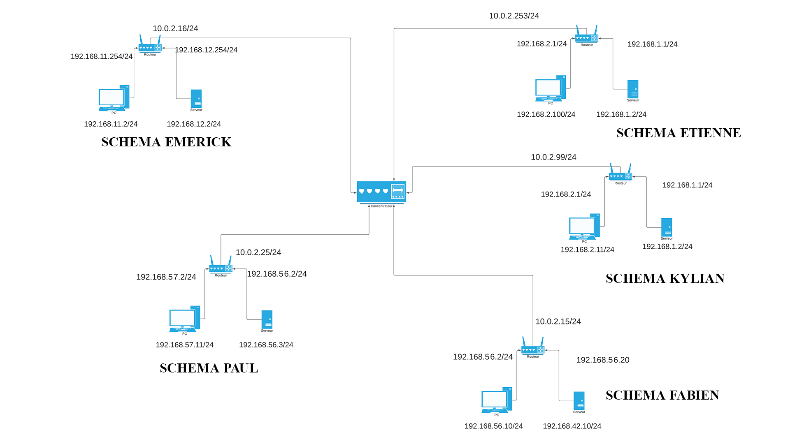
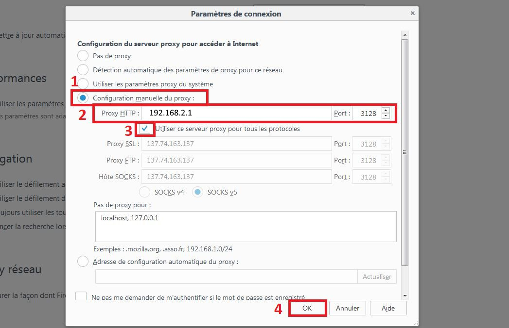

You're getting attacked by the NSA
Thanks to our very deep understanding of networks, We have setup a stub network, similar to one you can find in a bussiness
Mise en place d’un réseau d’entreprise
Introduction
L’objectif de ce projet est de disposer d’une ébauche de réseau tel qu’on pourrait trouver dans une entreprise, avec une DMZ contenant un serveur proposant plusieurs services (pour l’instant juste une instance apache2) et un réseau privé contenant les machines clientes de l’entreprise.
La totalité du réseau tourne sur des VMs Debian Bullseye 11.1/Ubuntu 20.04 virtualisées sur VirtualBox.
Ce projet a été réalisé en collaboration avec :
- Emrick Pesce
- Kilyan Le Gallic
- Fabien Borys
- Paul Durieux
- Etienne Cotte
Pour des raisons de simplicité, la configuration prise en exemple est celle de Kilyan Le Gallic.
Sommaire
- Détails des outils utilisés
- Plan d’adressage
- Interconnexion de la DMZ et du réseau privé
- Interconnexion avec un réseau identique géré par une autre personne
- Connexion des réseaux privés à Internet via le routeur
- Mise en place d’une politique de sécurité
- DHCP
- Proxy
- DNS
Détails des outils utilisés
- Serveur Web : apache2
- Navigateur web : Firefox
- Proxy : squid
- Serveur DHCP : isc-dhcp-server
- DNS : bind
Plan d’adressage
Le serveur est situé sur le sous-réseau DMZ 192.168.1.0/24 (adresse IP fixé à XXX.1.1 via la configuration DHCP)
Les clients sont situés sur le sous-réseau private 192.168.2.0/24
Le routeur fera office de serveur DHCP, de proxy et de serveur DNS. Ses adresses sont
192.168.1.1 (private) et 192.168.2.1 (DMZ). Son adresse publique est 10.10.2.16 (gérée par VirtualBox via une connexion NAT).
Le routeur dispose également d'une interface par pont, permettant l'interconnexion des réseaux et étant présente sur le sous-réseau 10.10.2.0/24.

apache2
Afin de pouvoir tester la communication client - serveur, il a été décidé de mettre en place un serveur apache2 hebergé sur le serveur et proposant un site web.
La configuration est celle par défaut, le besoin de disposer de
plusieurs serveurs en parallèle ne s’exprimant pas.
Interconnexion de la DMZ et du réseau privé
Pour que le client puisse accéder au serveur, il faut activer le routage sur le routeur.
Pour ce faire, il faut premièrement indiquer à la machine routeur de forward les paquets.
root@routeur:~$ : echo 1 > /proc/sys/net/ipv4/ip_forward
Il faut ensuite fournir aux machines clientes et serveur la route à suivre pour accéder l’une à l’autre.
root@client:~$ : ip route add 192.168.1.2/24 via 192.168.1.1
Mais une configuration plus intelligente des routes est de définir le routeur comme étant la route par défaut des machines.
root@client:~$ : ip route add default via 192.168.1.1
Désormais, un client peut accéder à la page web hébergée par le serveur.
Il n’y a pas besoin de mettre en place du NAT car les échanges sont routés entre deux réseaux privés (192.168.X.X) et ne seront pas rejetés par le routeur.
Interconnexion avec un réseau identique géré par une autre personne
Chacun de nos réseaux est géré de la même façon et dispose du même plan d'adressage 10.10.2.XXX
Mise en place du DNAT
Afin de pouvoir requêter un autre serveur, il faut que le client ait accès au serveur.
Or la configuration actuelle de nos routeurs rend cela impossible, car le client A a tout au plus accès au routeur B.
Il faut donc indiquer au routeur que toute requête sur le port 80 (web) du routeur soit redirigée sur le port 80 du serveur web. Cela est totalement transparent pour le client.
root@client:~$ : iptables -t nat -A PREROUTING -d 10.10.2.99 -p tcp --dport 80 -j DNAT --to-destination 192.168.1.2:80
Branchement au switch
Grace à la contribution de Mme Anaïs THILLAYE 🔥, nous disposons d’un switch sur lequel nous pouvons brancher nos machines hôtes en Ethernet en ajoutant une connexion par pont sur nos routeurs.

Site web de Emrick
Connexion des réseaux privés à Internet via le routeur
Pour l’instant, les machines clientes et serveurs sont connectées à Internet via une interface NAT, dans le souci de pouvoir installer des paquets tels que apache2 ou curl.
Cependant cette configuration n’offre presque aucun
contrôle de l’entreprise sur le trafic des machines clientes (ils peuvent par exemple accéder à des sites potentiellement infectés).
Il faut donc faire en sorte que le trafic sortant du réseau privé soit obligé de transiter
via le routeur.
Or, le routeur ne peut “forward” le trafic provenant du réseau privé sur Internet car les paquets provenant d’adresses privées doivent être rejetés par les routeurs n’ayant pas de connexion directe
dans ce réseau. Les paquets seraient alors directement drop par le prochain routeur.
Afin de pouvoir faire en sorte que les clients puissent communiquer sur Internet via le routeur, il faut mettre en place du Source Nating (SNAT).
Pour ce faire, il faut d’abord indiquer au routeur qu’il peut remplacer les adresses IPs sources par la sienne.
root@routeur:~$ : iptables -t nat -A POSTROUTING -o enp0s10 -j MASQUERADE
Il faut ensuite indiquer au routeur quelles adresses IP il peut remplacer.
root@routeur:~$ : iptables -t nat -A POSTROUTING -o enp0s10 -j SNAT --to 10.0.2.55
Les machines clientes ont maintenant accès à Internet via le routeur.
Mise en place d'une politique de sécurité
Nous voulons définir une politique de sécurité pour notre réseau. Pour cela, nous allons suivre plusieurs étapes.
Forward
Tout d’abord, on s’occupe du forward. On commence par refuser tous les paquets invalides :
iptables -A FORWARD -m state --state INVALID -j DROP -m comment --comment "All msg with invalid state are dropped"
Ensuite, il faut accepter les transferts de connexions. Dans notre cas on veut juste autoriser la redirection du port 80 vers notre serveur web :
iptables -A FORWARD -p tcp --dport 80 -d 10.0.2.16/24 -j ACCEPT -m comment --comment "Accept all connexion on my routeur through the port 80 : For accessing to the web server"
On continue à accepter toutes les connexions entre les différentes machines de notre réseau. Cela aurait été différent si nous étions en entreprise. En effet, nous aurions limité ceci pour mieux sécuriser le réseau. Voici les commandes :
iptables -A FORWARD -i enp0s8 -o enp0s3 -j ACCEPT -m comment --comment "Accept Client network to access internet"
iptables -A FORWARD -i enp0s3 -o enp0s8 -j ACCEPT -m comment --comment "Accept Client network to access internet"
iptables -A FORWARD -i enp0s9 -o enp0s3 -j ACCEPT -m comment --comment "Accept Server network to access internet"
iptables -A FORWARD -i enp0s3 -o enp0s9 -j ACCEPT -m comment --comment "Accept Server network to access internet"
iptables -A FORWARD -i enp0s9 -o enp0s8 -j ACCEPT -m comment --comment "Accept the connexion of the client on the server network"
iptables -A FORWARD -i enp0s8 -o enp0s9 -j ACCEPT -m comment --comment "Accept the connexion of the server on the client network"
Évidemment, il nous faut accepter les connexions déjà établies :
iptables -A FORWARD -j ACCEPT -m state --state RELATED,ESTABLISHED -m comment --comment "Accept all msgs when the connexion is already done"
Enfin, on refuse toutes les autres connexions, et pour être plus clair dans les logs, nous pouvons rajouter un préfixe :
iptables -A FORWARD -j DROP -m comment --comment "Refuse all others connexions"
iptables -A FORWARD -j LOG --log-prefix "FORWARD DROP" -m comment --comment "Rajoute au début des logs des règles précédentes ce préfix"
Input
Nous nous intéressons maintenant au input.
Comme pour le forward, on rejette tous les paquets invalides, et nous acceptons ceux provenant de connexions déjà établies :
iptables -A INPUT -m state --state INVALID -j DROP -m comment --comment "All msg with invalid state are dropped"
iptables -A INPUT -j ACCEPT -m state --state RELATED,ESTABLISHED -m comment --comment "Accept all msgs when the connexion is already done"
On autorise les messages du routeur vers lui-même :
iptables -A INPUT -i lo -j ACCEPT -m comment --comment "Autorise the loopback through the lo interface"
Enfin, on refuse toutes les autres connexions, et pour être plus clair dans les logs, nous pouvons rajouter un préfixe :
iptables -A INPUT -j DROP -m comment --comment "Refuse all others connexions"
iptables -A INPUT -j LOG --log-prefix "INPUT DROP" -m comment --comment "Rajoute au début des logs des règles précédentes ce préfix"
Finalement, nous nous retrouvons avec toutes ces commandes :
iptables -A FORWARD -m state --state INVALID -j DROP -m comment --comment "All msg with invalid state are dropped"
iptables -A FORWARD -p tcp --dport 80 -d 10.0.2.16/24 -j ACCEPT -m comment --comment "Accept all connexion on my routeur through the port 80 : For accessing to the web server"
iptables -A FORWARD -i enp0s8 -o enp0s3 -j ACCEPT -m comment --comment "Accept Client network to access internet"
iptables -A FORWARD -i enp0s3 -o enp0s8 -j ACCEPT -m comment --comment "Accept Client network to access internet"
iptables -A FORWARD -i enp0s9 -o enp0s3 -j ACCEPT -m comment --comment "Accept Server network to access internet"
iptables -A FORWARD -i enp0s3 -o enp0s9 -j ACCEPT -m comment --comment "Accept Server network to access internet"
iptables -A FORWARD -i enp0s9 -o enp0s8 -j ACCEPT -m comment --comment "Accept the connexion of the client on the server network"
iptables -A FORWARD -i enp0s8 -o enp0s9 -j ACCEPT -m comment --comment "Accept the connexion of the server on the client network"
iptables -A FORWARD -j ACCEPT -m state --state RELATED,ESTABLISHED -m comment --comment "Accept all msgs when the connexion is already done"
iptables -A FORWARD -j DROP -m comment --comment "Refuse all others connexions"
iptables -A FORWARD -j LOG --log-prefix "FORWARD DROP" -m comment --comment "Rajoute au début des logs des règles précédentes ce préfix"
iptables -A INPUT -m state --state INVALID -j DROP -m comment --comment "All msg with invalid state are dropped"
iptables -A INPUT -j ACCEPT -m state --state RELATED,ESTABLISHED -m comment --comment "Accept all msgs when the connexion is already done"
iptables -A INPUT -i lo -j ACCEPT -m comment --comment "Autorise the loopback through the lo interface"
iptables -A INPUT -j DROP -m comment --comment "Refuse all others connexions"
iptables -A INPUT -j LOG --log-prefix "INPUT DROP" -m comment --comment "Rajoute au début des logs des règles précédentes ce préfix"
DHCP
Configuration du serveur DHCP
Afin d’éviter la configuration manuelle des machines clientes, il faut fournir un service DHCP (Dynamic Host
Configuration Protocol).
L’outil choisi pour effectuer ceci est isc-dhcp-server, qui remplace dhcp3-server dans le set des outils réseaux classiques sous Linux.
Le serveur DNS choisi est le DNS de Cloudflare (1.1.1.1 / 1.0.0.1).
Il faut déclarer dans le fichier /etc/dhcp/dhcpd.conf la configuration suivante :
option domain-name-servers 192.168.1.1 #Adresse du serveur DNS local sur le router, 1.0.0.1;
subnet 192.168.2.0 netmask 255.255.255.0 {
range 192.168.2.2 192.168.2.30; #Plages d'adresses pouvant être données à un client
options routers 192.168.1.1; #Route par défaut pointant sur le routeur
}
Pour donner une adresse constante au serveur, on peut l’indentifier via son adresse MAC :
host server {
hardware ethernet 08:00:27:13:70:bb; #Adresse MAC de l'interface du serveur
fixed-adress 192.168.1.2;
Il faut également indiquer à isc-dhcp-server quelles interfaces il doit écouter.
Il faut pour cela modifier le fichier /etc/default/isc-dhcp-server en rajoutant les interfaces à écouter (par défaut, l’interface
écoutée est eth0) :
INTERFACES="enp0s8 enp0s9"
Configuration des clients
Pour que les machines clientes puissent demander et recevoir des adresses via le serveur DHCP, il faut modifier la configuration de leur interface :
Fichier de configuration /etc/network/interfaces :
iface enp0s8 inet dhcp
Pour faire une demande DHCP depuis une machine cliente, il faut exécuter la commande suivante :
root@client:~$ : dhclient -v -r enp0s8
Proxy
Proxy cache classique
Configuration du proxy
Afin de pouvoir éviter une surcharge inutile du réseau si plusieurs clients souhaitent accéder à la même ressource (la bande passante externe est bien plus coûteuse que la bande passante interne), on peut mettre en place un proxy.
L’outil utilisé est squid, un proxy cache http/https/ftp combiné à un accélérateur web (ressource compressor).
Squid est hebergé sur le routeur, et est configuré de tel sorte qu’il n’autorise pas le protocole SSH ni l’accès
au site internet facebook.com .
Fichier de configuration /etc/squid/squid.conf :
http_port 3128 #Configuration par défaut du port
acl localnet src 192.168.2.0.24 #private network
acl SSH port 22
acl Safe port 80
acl Safe port 443
acl Safe port 21
acl Facebook dstdomain dstdomain .facebook.com
//////
http_access deny SSH
http_deny !Safe
http_deny Facebook
Configuration du navigateur
Pour que le navigateur utilise le proxy, il faut lui indiquer qu’il doit passer par un proxy :

Proxy transparent
En raison de contraintes horaires et techniques, cette partie n'a pas pu être réalisée dans son entièreté. Un exemple de configuration sera donc fourni.
Afin de faciliter l’accès à Internet des machines clientes, on peut indiquer au routeur qu’il doit rediriger tout le trafic http sur le proxy afin que le client n’ai pas à configurer son proxy.
Il s’agit d’une simple redirection
des ports 80 (HTTP) et 443 (HTTPS) :
root@routeur:~$ : iptables -t nat -A PREROUTING -i enp0s8 -p tcp --dport 80 -j REDIRECT --to-port 3128
root@routeur:~$ : iptables -t nat -A PREROUTING -i enp0s8 -p tcp --dport 443 -j REDIRECT --to-port 3129
A noter que Squid est configuré pour disposer de 2 ports qui prennent respectivement en charge HTTP (port 80) et HTTPS (port 443)
http_port 3128 #Configuration par défaut du port HTTP
https_port 3129 #Configuration par défaut du port HTTPS
acl localnet src 192.168.2.0.24 #private network
acl SSH port 22
acl Safe port 80
acl Safe port 443
acl Safe port 21
acl Facebook dstdomain dstdomain .facebook.com
//////
http_access deny SSH
http_deny !Safe
http_deny Facebook
Ceci dans le but de ne pas essayer d'envoyer une requête HTTPS sur le port HTTP, ce qui mettrait en échec le proxy.
Désormais, les machines clientes n’ont plus à configurer leur navigateur pour utiliser le proxy.
DNS
L’outil choisi pour réaliser le serveur DNS est bind9.
Pour créer un nom de domaine, il faut créer un nouveau fichier db.nom_de_zone dans le répertoir /etc/bind/ du serveur.
Exemple
avec la zone mydmz.lan.
Fichier de configuration db.mydmz.lan:
$TTL 604800
@ IN SOA mydmz.lan. webmaster.mail.net. (
1 ; Serial
604800 ; Refresh
86400 ; Retry
2419200 ; Expire
604800 ) ; Negative
@ IN NS mydmz.lan.
NS IN A 192.168.1.2
box IN AAAA ::
Il faut ensuite déclarer la zone dans le fichier /etc/bind/named.conf.local de configuration local de bind9 :
zone "mydmz.lan" {
type master;
file "/etc/bind/db.mydmz.lan";
}
On peut maintenant relancer le service named (aliasé par bind9) et tenter d’accéder au nom de domaine.
Le résultat d’une commande dig sur le nom de domaine retourne une réponse mais provenant de 1.0.0.1, le
DNS passé en configuration par défaut via le DHCP.
Il faut donc indiquer à notre serveur DHCP de rajouter 192.168.1.2 en tant que serveur DNS afin qu’il apparaise dans le /etc/resolv.conf des clients.
Une fois la modification effectuée, les clients peuvent requêter le nom de domaine et sont dirigés sur la page web hebergé sur le serveur.
Afin de pouvoir accéder aux noms de domaines mis en place par mes
camarades, nous avons choisi de configurer chacun de nos DNS afin de fournir aux machines clientes l’adresse à joindre (l’adresse du routeur). Cette décision a été prise en raison de contraintes horaires et
techniques de notre part.
$TTL 604800
@ IN SOA server112.com. webmaster.mail.net. (
1 ; Serial
604800 ; Refresh
86400 ; Retry
2419200 ; Expire
604800 ) ; Negative
@ IN NS server112.com.
NS IN A 10.10.2.16
box IN AAAA ::
Note : server112.com est le nom de domaine du serveur d'Emrick.
zone "server112.com" {
type master;
file "/etc/bind/db.server112.com";
}
Nous tenons à remercier Anaïs Thillaye, Léo Bouteiller ainsi que Jonathan Bonnefoy pour leur aide et leur soutien.